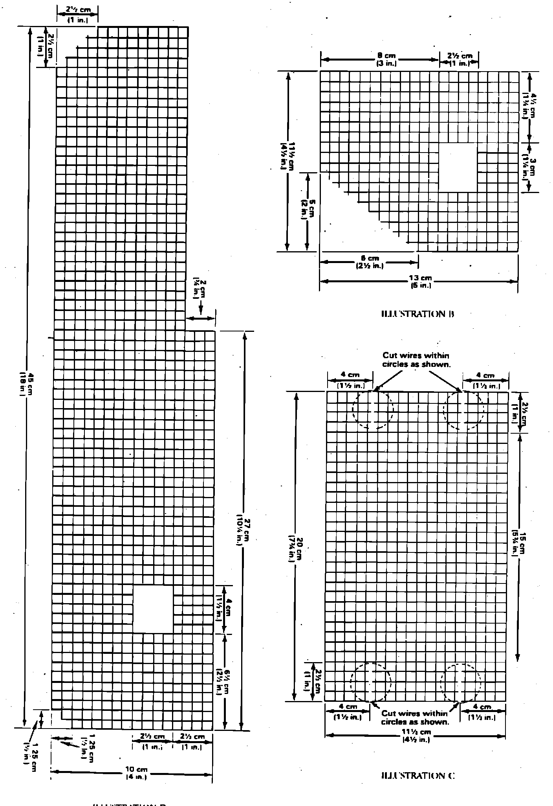
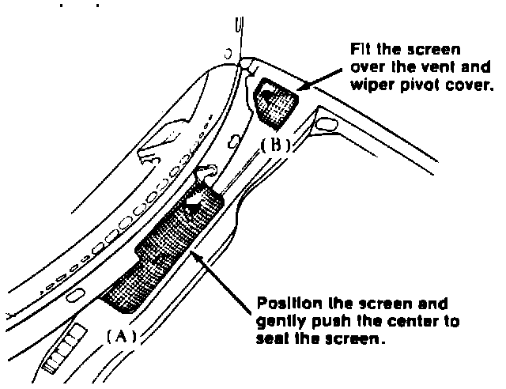
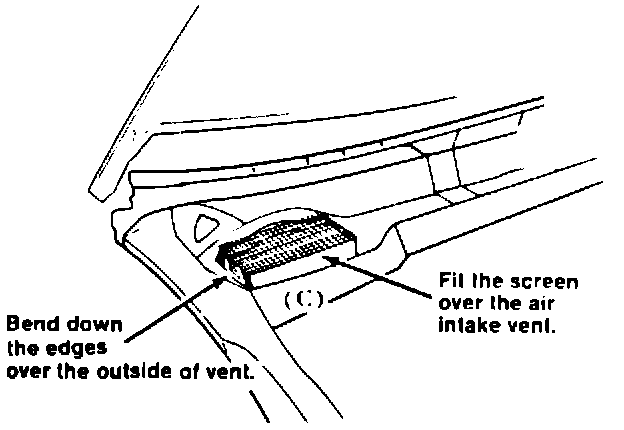

<!DOCTYPE html>
<html>
  <head>
    <title>A/C - Air Intake Screens Revised — 1987 Acura Legend Sedan V6-2494cc 2.5L SOHC FI Service Manual | Operation CHARM</title>
    <meta name='description' content="Detailed repair manual for the 1987 Acura Legend Sedan V6-2494cc 2.5L SOHC FI.">
    <link rel='stylesheet' href="../style.css">
    <meta name='viewport' content='width=device-width, initial-scale=1.0' />
  </head>
  <body>
    <div class='theme-colors header'>
      <div class='branding'><b>Operation CHARM</b>: Car repair manuals for everyone.</div>
<div class=breadcrumbs><a class='breadcrumb-part' href="../">Home</a> <b>&gt;&gt;</b> <a class='breadcrumb-part' href="../Acura/">Acura</a> <b>&gt;&gt;</b> <a class='breadcrumb-part' href="../Acura/1987/">1987</a> <b>&gt;&gt;</b> <a class='breadcrumb-part' href="../index.html">Legend Sedan V6-2494cc 2.5L SOHC FI</a> <b>&gt;&gt;</b> <a class='breadcrumb-part' href="0.html">Repair and Diagnosis</a> <b>&gt;&gt;</b> <a class='breadcrumb-part' href="0.html#Body%20and%20Frame/">Body and Frame</a> <b>&gt;&gt;</b> <a class='breadcrumb-part' href="1358.html">Technical Service Bulletins</a> <b>&gt;&gt;</b> <a class='breadcrumb-part' href="1358.html#All%20Technical%20Service%20Bulletins/">All Technical Service Bulletins</a> <b>&gt;&gt;</b> <a class='breadcrumb-part' href="4919.html">A/C - Air Intake Screens Revised</a></div></div>
<div class='main'>
<h1>A/C - Air Intake Screens Revised</h1><span class='indent-0'>&#09;</span>April 20, 1987<br><br><span class='indent-0'>&#09;</span>BULLETIN NO. 87-007<br><br><span class='indent-0'>&#09;</span>YEAR ALL<br><br><span class='indent-0'>&#09;</span>MODEL ALL<br><br><span class='indent-0'>&#09;</span>Air Intake Screens (Supersedes 87-007, dated March 30, 1987)<br><br><b><span class='indent-0'>&#09;</span>PROBLEM </b><br><br>Debris in <a href="1105.html">blower motor</a>.<br><br><b><span class='indent-0'>&#09;</span>CORRECTIVE ACTION </b><br><br>Install wire mesh screens over the intake vents in the cowl area as described below:<br><br><b><span class='indent-0'>&#09;</span>Legend:</b><br><br><span class='indent-0'>&#09;</span>1.<span class='indent-5'>&#09;</span>Remove the windshield wiper arms, rubber hood seal, and top cowl garnish.<br><br><h3>T�8:</h3><div class='oxe-image'></div><br><br><br><br><span class='indent-0'>&#09;</span>2.<span class='indent-5'>&#09;</span>Cut 1/4 inch wire mesh screen using the dimensions given for Illustrations A and B.<br><br><span class='indent-0'>&#09;</span>3.<span class='indent-5'>&#09;</span>Lay the large screen (A) over the center air intake vents, and gently push into place.<br><br><div class='oxe-image'></div><br><br><br><br><span class='indent-0'>&#09;</span>4.<span class='indent-5'>&#09;</span>Fit the small screen (B) over the left side air intake vent and wiper pivot cover.<br><br><span class='indent-0'>&#09;</span>5.<span class='indent-5'>&#09;</span>If the screens fit correctly, remove and install them using Silicone Liquid Gasket (PN: 08718-55000040E), or equivalent, around the edges of the screens to hold them in place.<br><br><span class='indent-0'>&#09;</span>6.<span class='indent-5'>&#09;</span>Reinstall the top cowl garnish, rubber hood seal, and windshield wiper arms.<br><br><b><span class='indent-0'>&#09;</span>Integra:</b><br><br><span class='indent-0'>&#09;</span>1.<span class='indent-5'>&#09;</span>Remove the windshield wiper arms, rubber hood seal,. and top cowl garnish.<br><br><h3>T�8:</h3><div class='oxe-image'></div><br><br><br><br><span class='indent-0'>&#09;</span>2.<span class='indent-5'>&#09;</span>Cut 1/4 inch wire mesh screen using the dimensions given for Illustration C.<br><br><div class='oxe-image'></div><br><br><br><br><span class='indent-0'>&#09;</span>3.<span class='indent-5'>&#09;</span>Fit the screen (C) over the right side air intake vent and bend its edges down over the outside of the vent.<br><br><span class='indent-0'>&#09;</span>4.<span class='indent-5'>&#09;</span>If the fit is correct, remove and reinstall the screen using Silicone Liquid Gasket (P/N: 08718-55000040E), or equivalent around its edges to hold it in place.<br><br><span class='indent-0'>&#09;</span>5.<span class='indent-5'>&#09;</span>Reinstall the top cowl garnish, rubber hood seal and windshield wiper arms.<br><br><b><span class='indent-0'>&#09;</span>WARRANTY CLAIM INFORMATION</b><br><br><span class='indent-0'>&#09;</span>Operation number:<span class='indent-18'>&#09;</span>812015<br><span class='indent-0'>&#09;</span>Flat rate time:<span class='indent-18'>&#09;</span>0.6 hour<br><span class='indent-0'>&#09;</span>Failed part P/N:<span class='indent-18'>&#09;</span>74212-SD4670 (Legend)<br><span class='indent-18'>&#09;</span>60659-SD2-A00 (Integra)<br><span class='indent-0'>&#09;</span>Defect Code:<span class='indent-18'>&#09;</span>078<br><span class='indent-0'>&#09;</span>Contention Code:<span class='indent-18'>&#09;</span>B99<br><br><br><br></div>
<div class="theme-colors footer">
  <i>pro multis</i> · <a href="../about.html">About Operation CHARM</a>
</div>
<script src="../script.js"></script>
</body>
</html>
